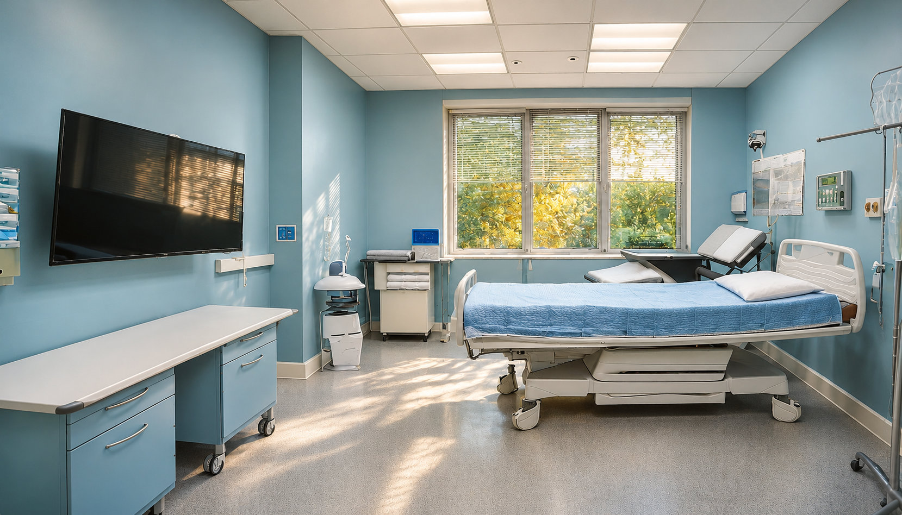

当院について
佐藤医院は、地域の皆様の健康を守り、より良い生活をサポートすることを使命としています。
私たちは、患者さま「患者様一人ひとりに寄り添った診療」を大切にし、地域の皆様の信頼を得られるよう努めてまいりました。今後も、当院の基本理念に沿った質の高い医療サービスを提供し続けることをお約束いたします。
診療方針
患者様の健康を第一に、一人ひとりのお悩みや生活に寄り添った診療を大切にします。症状の背景にも目を向け、わかりやすい説明と、安心して受けられる診療に努めています。
地域に根ざした医療
地域の皆様にとって身近な相談先であるために、日常の健康管理から予防医療まで幅広く対応します。家族みんなが安心して通える医療を目指しています。
ご家族全員をサポート
当院では、子どもから高齢者まで幅広い世代の皆様の健康を支えます。病気の診察だけでなく、健康上の不安や生活についても気軽にご相談いただける環境を整えています。

医療設備とチーム医療
当院では、患者様の不安を少しでも減らせるよう、診療に適した設備を整えています。医師・看護師・検査技師が連携し、丁寧なケアを提供します。
医院の理念・方針
佐藤医院は、地域医療の一員として「患者様一人ひとりに寄り添った医療」を心掛けています。
地域とともに歩み、安心して相談できる医院であり続けます。

1. 信頼関係を築く医療
患者様一人ひとりと向き合い、納得いただける説明を尽くす

2. 予防医療の重視
健診・予防接種・健康相談で病気を未然に防ぐ

3. 最先端の技術・設備
高度な医療機器と最新知識で精度の高い診断・治療を行う

4. ライフステージに応じた医療
小児から高齢者まで、各年代に必要なケアを提供

5. 地域密着型の医療
気軽に相談できる存在として、
健康セミナー等で地域に貢献
6. プライバシーと安全の確保
個人情報保護と感染症対策・衛生管理を徹底

7. チーム医療の推進
多職種が連携し、患者様に最適なケアを提供
患者様と共に歩む未来
佐藤医院は、皆様の健康を第一に考え、年齢を問わず安心して相談できる地域医療を目指します。
これからも患者様の健康を支えるパートナーとして努めてまいります。
スタッフ紹介
地域の皆様に安心して通院いただけるよう、スタッフ一同、協力して診療にあたっています。
それぞれの専門性を活かし、質の高い医療を支えるパートナーとして努めてまいります。
院長 佐藤 太郎
経歴：東京大学医学部卒業。大学病院での診療経験を経て、地域の皆様の健康を支える医療を目指して開院。
専門分野：生活習慣病、外来診療、内科全般
コメント：患者様にとって身近な医師であることを大切にしています。どんな小さな不調でも、お気軽にご相談ください。

看護師長 鈴木 真里
経歴：看護専門学校卒業。総合病院にて経験を積み、外来診療のサポートに携わっています。
専門分野：患者様対応、健康相談、予防接種
コメント：安心して治療を受けていただけるよう、いつも笑顔でお待ちしています。

臨床検査技師 高橋 由美
経歴：医療技術系の専門学校卒業。検査部門での経験を活かしています。
専門分野：血液検査、心電図検査、超音波検査
コメント：検査に不安を感じる方にも、安心して受けていただけるよう丁寧にご案内します。

医療事務 山本 花
経歴：医療事務の経験を活かし、受付や会計、診療のご案内を担当しています。
専門分野：受付業務、カルテ管理、医療費計算
コメント：皆様に気持ちよくご利用いただけるよう、笑顔と温かい対応でお迎えします。